Sloopy Doopid (bounce that ass in a lissajous)
How a 2am algorave afterparty became a four-minute, AI-assisted, live-coded music video.
The Music Model
We built the model we used. It was trained on licensed music from Audiosparx and Freesound and we released it open source for everyone to use for free. It's called Stable Audio 3 (155k downloads on Hugging Face). It's a diffusion transformer (with a transformer decoder) that is adversarially post-trained.
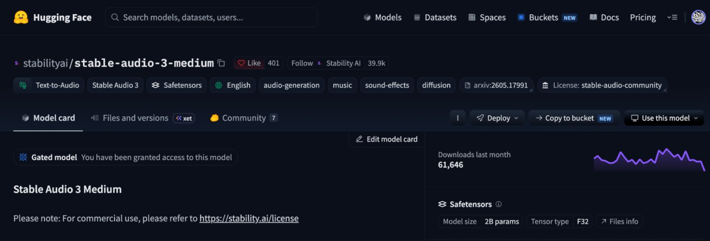
Our NVIDIA GPU used to overheat and crash at raves, so I spent a year optimizing it to run on our MacBooks. It can even train LoRAs on the MacBook. No NVIDIA GPU needed. No wifi needed. You can find the optimized kernels for various hardware here: github.com/Stability-AI/stable-audio-3/tree/main/optimized
Since the model can make a full song in as fast as 300ms, it means we can use it live on stage in a practice we named prompt jockeying.
Prompt Jockeying
SLOOPY DOOPID began as a live prompt jockeying set. What is that? It's DJing, but the songs don't exist yet: they're generated live on stage, then mixed. We came up with the concept with our friends and filmed a documentary. We love it because there's more improvisation possible than DJing and therefore more challenging.
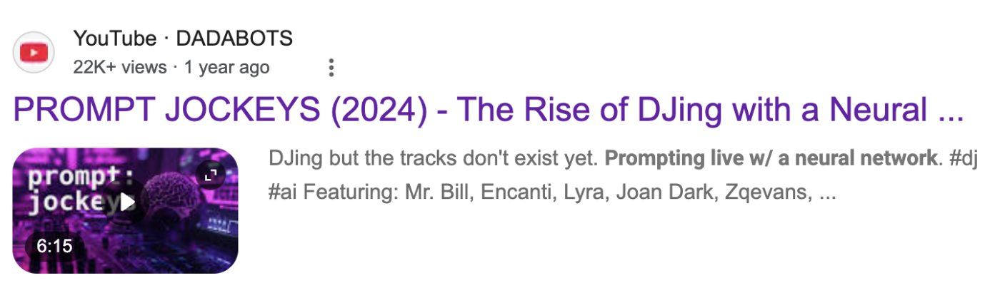
Here's an example custom live setup. Above, we do djay mixing; below, we prompt songs into existence. A single generation can chain multiple models together through pipelines of inpainting and audio-prompting, which is necessary to make subgenres like twinkle trap.
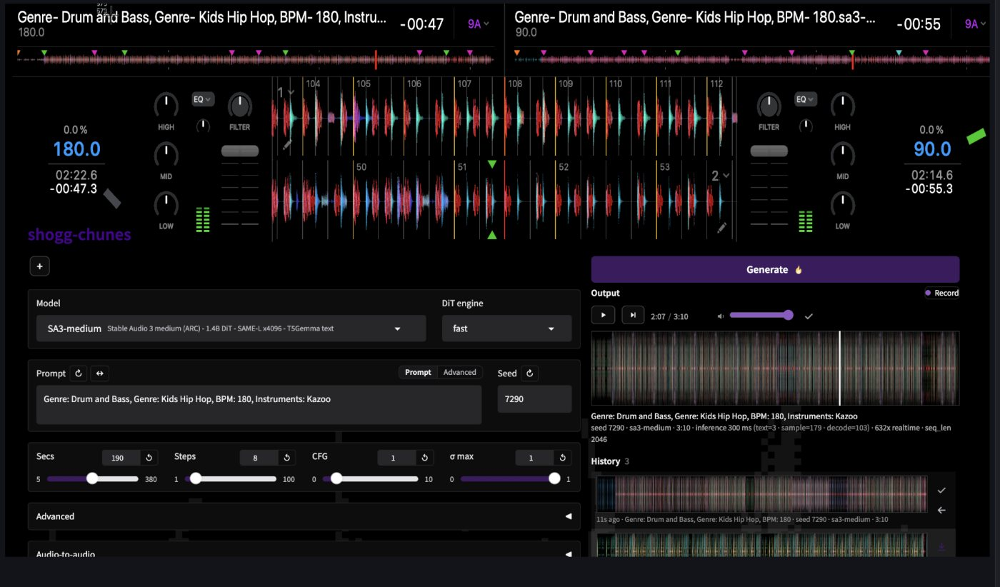
The Algorave
Late one night, RTyler assembled a very spontaneous algorave afterparty and told Zack and Char to go on stage together 5 minutes before set time. In a silly mood, they whipped out their laptops. Zack improvised a 1-hour prompt jockey set of "eggpunk dnb" with a Stability AI research model, Char VJ'd with her MIT Media Lab research tool, and they both acted ridiculous for the camera. It was a moment so illustrious, a supergroup was formed to remix it.
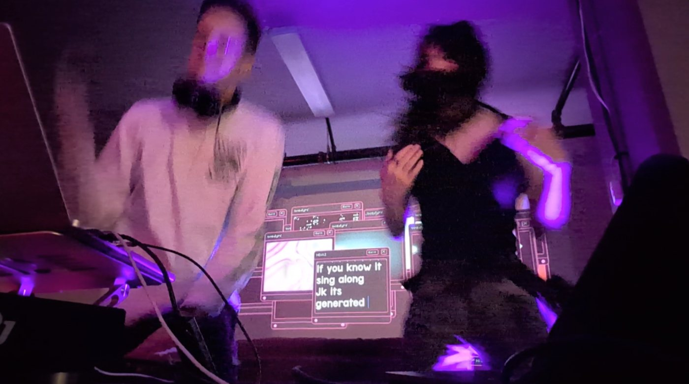
On a Wednesday afternoon, Wobbly texted me, "You making any of the Algorithmic Art Assembly shows? I'm catching all of them". Music tech titans the likes of Keith Fullerton Whitman, Char Stiles, rtyler, c_robo_, Claire L Evans, Nathan Ho, and Google Magenta gave talks, workshops and performances. I definitely wasn't going to miss it! The onslaught of algorithmic thought that week was both invigorating and increasingly hard to endure. The esoteric formulations consumed my thoughts and dreams. By the end, my brain was Bob's confetti. I felt slightly loopy, stupid, and dumbfounded after it all. Realizing it's not just my musicianship, but now my coding skills that have atrophied after so many years of using AI.
Then, rtyler asked if I would play the afters. While overwhelmed with the immense creative force in math and process I had ingested the three days prior, I committed to the gig, knowing I had just the right response for MonumentSF. Flying straight for the sun, I prompt engineered a 180 bpm readymade dnb set. With no visual aspect, I fell well below rtyler's expectations for an impromptu Dadabots set with the audience in the state they were. Like a hero, he recruited Char Stiles just 5 minutes before showtime as my VJ. The songs never existed, the visuals were cast from code, we did it in hopes the party's weary 2am asses might start to oscillate up off the lounge sofas.
Fantasy IDE
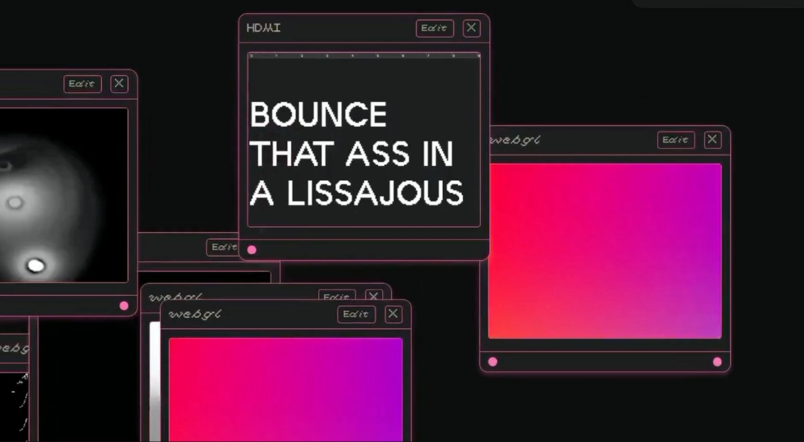
The Fantasy IDE is a web-based, JavaScript-driven live coding environment built as a windowing system: small windows can be spawned onto the screen, each containing a different kind of content (GLSL shaders, WebGPU code, plain JavaScript, HDMI input, or other device input like a webcam feed), and any window can be made full-screen to write and edit its code live. The core architecture is a bidirectional tile system: a visual, node-like graph representation of the code's inputs, outputs, and connections that can be edited either as tiles or as raw text, with changes syncing both ways so that the graphical view never sacrifices the nuance of the underlying textual program.
Because the tiles are just another representation of the code, the code itself can reach back and manipulate the tiles' own properties (position, movement, behavior), giving the coder direct programmatic control over the interface's visual elements rather than treating the window layout as a fixed shell around the code.
Here () Char uses her IDE to generate the lyrics out of many smaller lissajous curves.
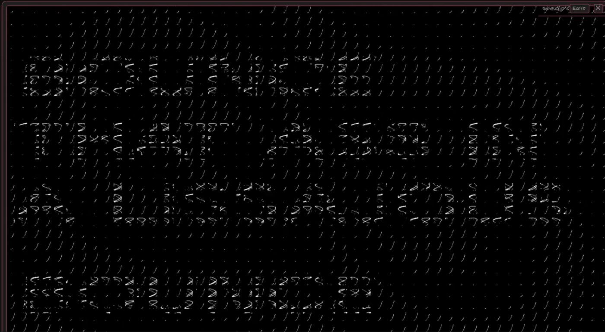
Here () we put the windows themselves into a lissajous animation!
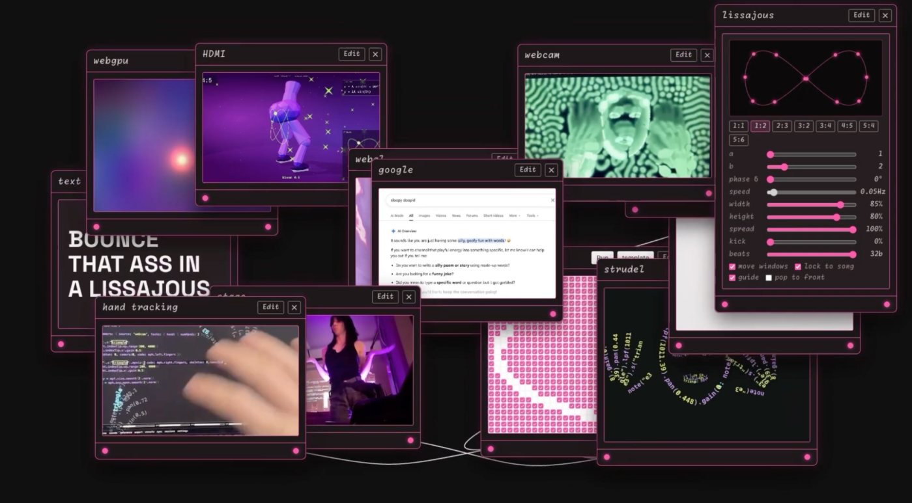
The Remix
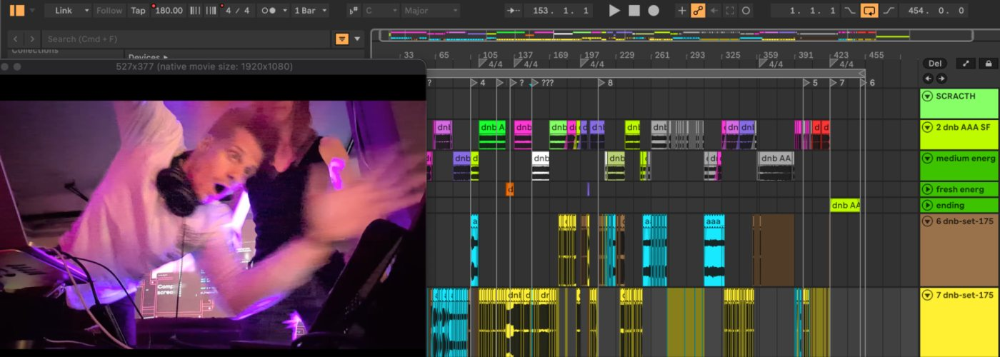
I wasn't there, but I wanted to be a part of it, so I spent the next 2 months remixing the raw recording. I curated the best parts of that 45 minutes into the perfect 10-minute mix. I put their best dance moments on loop. There were no lyrics yet. It stood on its own as a completed piece, a good extended version to dance to live: eggpunk-dnb-180.mp3
But we weren't done. We had the ambition to crunch it down even further to 4 minutes and ice it with frosting of all our friends' vocals. After I listen to my music 100 times, it's tough to delete parts, because it becomes a part of me. To make it work, I had to embrace full ADHD. Nothing was repeated longer than it had to be.
Vocals
"Music's just about hanging out" – Daouda
To record vocals, I really didn't want us to do it remotely and be even slightly disconnected from the vibe of us hanging out. It was important, so we traveled to different cities. To capture the spontaneity of our random jokes, vocal lyrics were NOT recorded in a studio into a microphone, but into our phones, edited later with AI speech enhancement (using Adobe Podcast).
Wobbly
Wobbly is a member of the legendary mischief band Negativland, known since the 80s and 90s for culture jamming, pranks, and satirization of mass media consumer culture. They do this by sampling commercial jingles, inadvertent on-air remarks, radio recordings, and internet videos to make absurd audio collages. They're the best at it.
Negativland's use of sampling-as-the-lead-instrument was an inspiration for my early music production in college, so it was an incredible opportunity for us to work together. Around 2020 Wobbly took interest in neural-synthesis-as-sampler after falling in love with NO SOUL, our 24/7 generative soul funk music livestream, which ran non-stop for years. Wobbly recorded many hours of it, in an effort to archive this otherwise discarded ephemeral output.
CJZack and Carrie had been building a new music studio in their home in Sacramento for months, and my visit with Wobbly was their impetus to finish. Our session was DAY 1 of this new studio.
Before arriving, Wobbly sent us an awesome demo of his latest EP which was full of speech synthesis sound experiments, including one that modified Suno CEO Mikey Shulman's ill-advised quote "It's not really enjoyable to make music". Because the purpose of text2speech is for reading things aloud, not for singing or music, we loved the idea of it being the main voice of a song. Just seems so incorrect. It'd be funny to use that and say "Wobbly is our lead singer".
Together we listened to the full 10-minute version of Sloopy Doopid and asked him "what would you add to this?". He said "I have just the thing".
Wobbly sent us two speech synthesis samples:
- Different text2speech voices saying matter-of-factly "at this time, I invite you to physically assault the person standing next to you".
- Two audiobook voices simultaneously saying the same string of indecipherable nonsense which ends in (what I think sounds like) "…for the frailty of the mind would have seemed to him quite wrong."
#1 was too powerful and probably deserved its own song with a mosh pit drop. (We'll save that one for later.) #2 was a great fit and occupied another quadrant of the sloopy doopid paradox: teetering on the precipice of scramblebrain while having the confident tone of high-style literary intellect.
Zack's Vocals
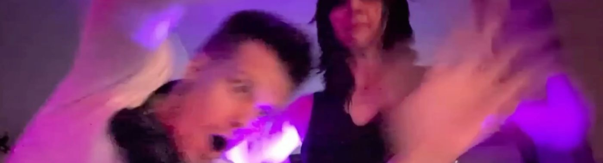
A fan at Sonar called us "the beavis and butthead of ai music" and I can't imagine why.
Despite Zack building a whole home music studio for this song, I deliberately avoided going in there to get his vocals. To open ourselves to the genius of the muses, you can't force it. To capture the spontaneity of our random jokes, I had my phone ready in any situation to record Zack's random utterances. These lyrics emerged at 2am on the living room couch, deep in the LOLs of knuckleheaded buffoonery, with a level of meaninglessness that catapulted me onto the ground writhing in a fit of laughter. It was a kind of thing you can't get from forcing it in a vocal booth.
Zack's vocals are inspired by Chicago footwork (like Traxman's "Shake Dat Azz"), Oakland hyphy, and New Orleans bounce (like Big Freedia), all similar in their use of repetitive, irreverent, lovably obnoxious vocals over high-energy fast beats.
That same Zack couch session gave us the words "sloopy" and "doopid".
Doopid & Sloopy
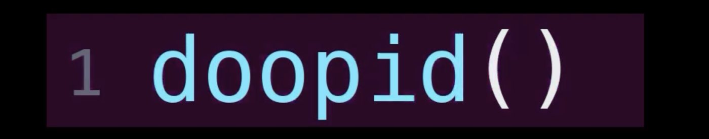
Zack said these words are meaningless, but here's my formal meta-cognitive analysis:
- Doopid
- Stupider than stupid. You're saying "stupid" in a stupid way. It's slightly antagonistic. It's as if someone just called you "stupid", and you retaliated by making fun of how they said it, portraying them as unflatteringly moronic in an effort to establish them as the stupid one. Your rebuttal reflected the insult, it bounced off of you and stuck to them, increasing the magnitude of the word vector on the way out. Very meta.
- Sloopy
- Sloppier than sloppy. It somehow carries the subliminal remnants of "stupid" that hearing the word "doopid" earlier subconsciously primed. That bias to hear "oo" after "s" rears its head a moment later, like a stowaway sneaking out under the unwatchful eye of a sleepy security guard. You begin to say "sloppy", but your mental conviction is so low that it comes out "sloopy". Again, very meta.
Each word is very itself. Hofstadter might classify them as autological: words that describe themselves or turn back on themselves.
Lissajous Twerking
I came to Brooklyn for a few days to hang out at Char's to work on the song. Char runs a hackerspace called Hex House.
One evening, while we were bored at a Hex House math club meetup on dynamical systems, RTyler texted us his idea for "lissajous twerking", whereupon I immediately vibecoded with Astra 6 a twerking simulator, stood up and mischievously subverted the discussion toward the application of Arnold tongues to booty shaking.
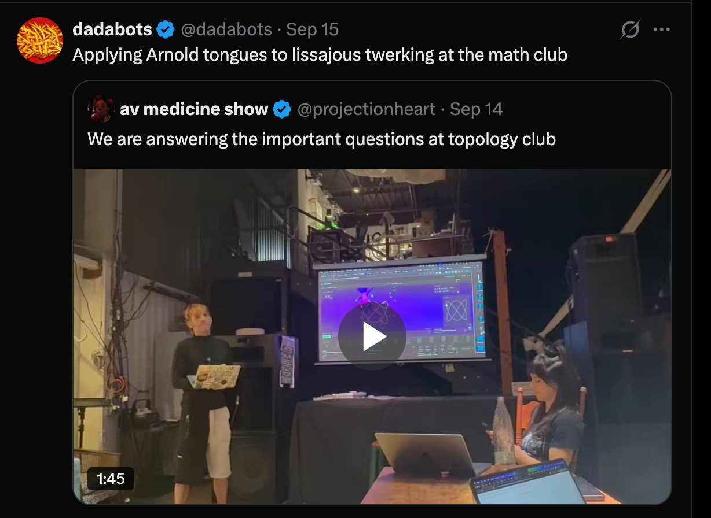
Lissajous curves are the family of shapes made by the harmonic motion of perpendicular sinusoidal vibrations.
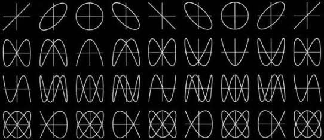
The lissajous twerk lab can be found here: lissajous-booty-lab.emperorcj.chatgpt.site
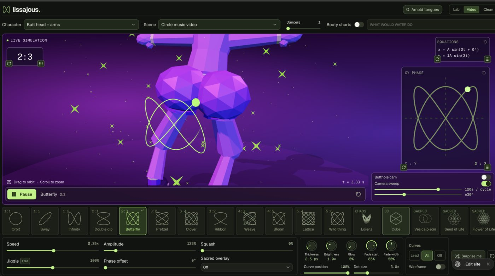
Has no one tried to twerk like this before? Hahaha. I guess you had to be a ratchet math geek. This joke became the whole song. We knew the hook of the song would need to be "Bounce that ass in a lissajous". We were compelled.
Everyone we showed had a funny feature idea, and we added them all in: lorenz curves, group dancers, the flower of life, jiggle ratios, a cube, booty shorts. We featured these all in the second reprise of the hook ().
While I was working on the twerk lab, my friend Asa posted an Instagram story declaring booty shorts should say spiritual quotes. I asked her what ours should say; she said "What would water do?". I knew immediately this was about Taoism because I've been way into water symbolism lately. This would also look funny at full jiggle.
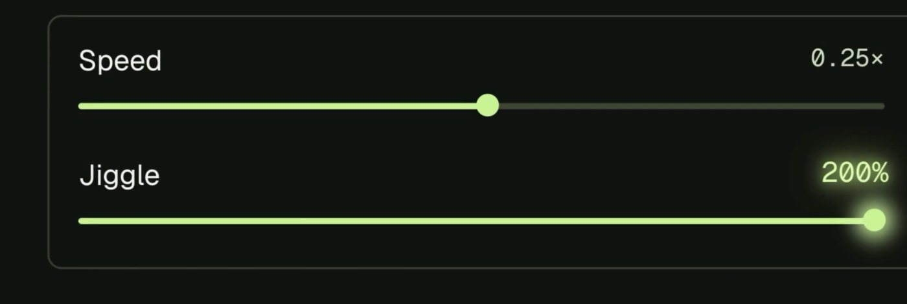
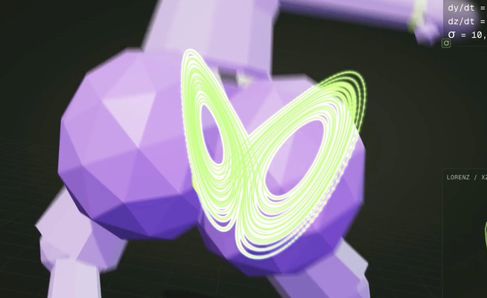
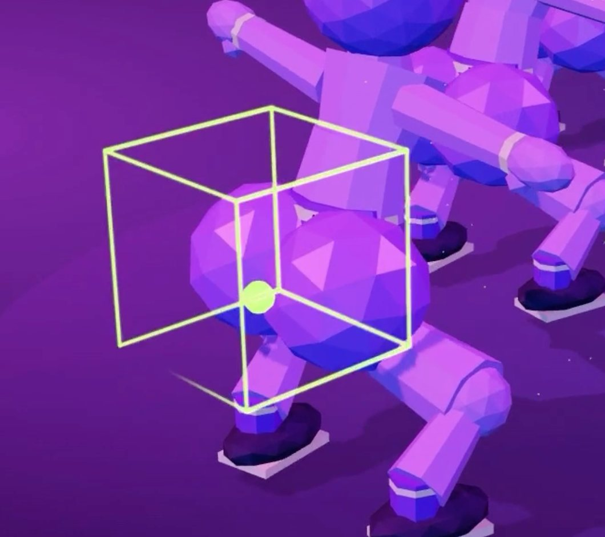
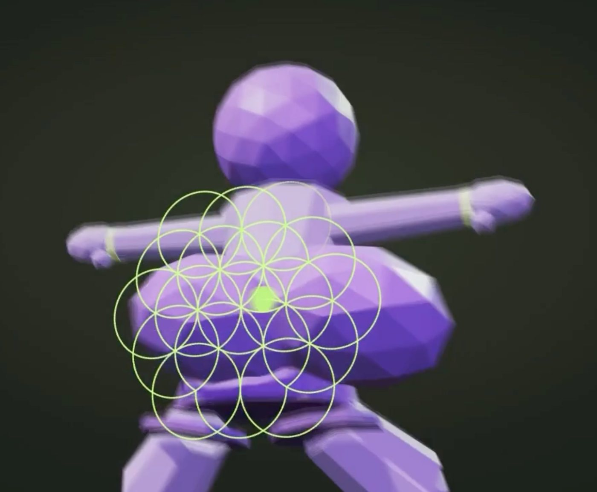
Char's Vocals
It was perfect, it was beautiful. Char's "B" in bounce was so bouncy, we used the bounciest B. It came out of us just being silly on the couch recording into the phone.
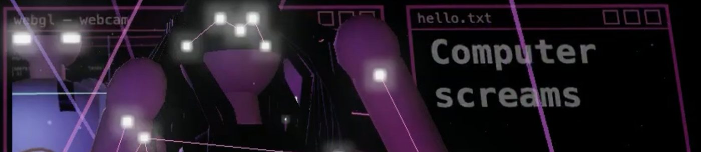
During a heavy section of the live set, Zack started generating sounds halfway between synths and screams. (The 10-minute version of Sloopy Doopid ends with a hilarious final climax of Zack's face mouthing these screams.) Char, who was livecode VJing, saucily wrote "computer screams" in a bouncing window, and it became a recurring theme.
At Char's flat in Brooklyn, after a night of us dancing to Exjaynine uptempo breakcore and learning to bunny hop on bikes in the street, we did a living room couch phone lyric session. She grabbed the phone and began a harrowingly cult chant:
We pitched her down, added a little bit of reverb, and Char was instantly transformed into a gargoyle-maxxing black metal singer. Perfect transition into Lil Data, as I tease parts of his livecode face without showing you.
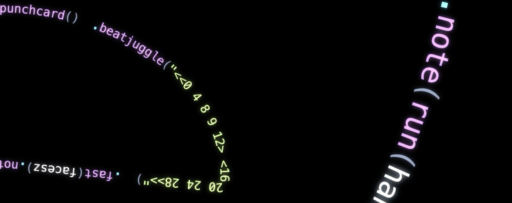
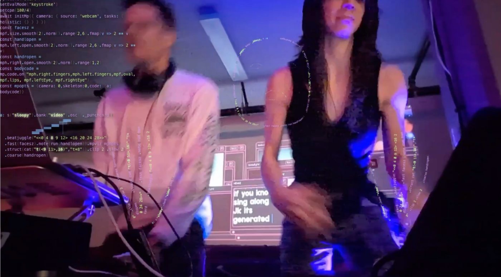
Lil Data's Livecode Solo
Lil Data does a "livecode solo" in a single take, where mid-way he becomes the code, highlighting human livecode performance as virtuosity.
CJAs a metal songwriter, my instincts here were "ok here is where the guitar solo should go" but this is DADABOTS, we needed something unusual and masterful, so we asked a master.
Lil DataDadabots requested a "Lil Data live code solo" for their track, something I was quick to agree to. I have played with the idea of the live code solos before, for example on my Charli XCX Vroom Vroom edit, and on the track Hickory from Folder Dot Zip. I find it similar to how the term "algorave" itself prevents algorave from being taken too seriously: the QWERTY keyboard's lack of musical ergonomy combined with the inescapable cringe of soloing is ideal for making a handsome fool of oneself!
There are three technical aspects to this live code solo that I think are fun to point out. First, I am live coding Dadabots' video itself, via an app that uses a custom video codec to make individual video frames randomly and instantly accessible (a trick known to VJs but not explored in live coding AFAIK). Second, setEvalMode("keystroke") tells my custom Strudel fork to evaluate the code after every keystroke (instead of via a specific keybind like Cmd+Enter), inspired by an idea that hit me around 2017 that any sufficiently rapid live coding would be indistinguishable from instrumental performance (hat tip to Arthur C. Clarke). Third, I demonstrate "bodycode" using my Strudel Mediapipe package to both map the code onto my body and also control pattern parameters with my face and hands. Please enjoy this deconstructive post-coding mess.
btw he really does this in a single take. He sent us the file take26.mp4. It was amazing. It made Char scream.
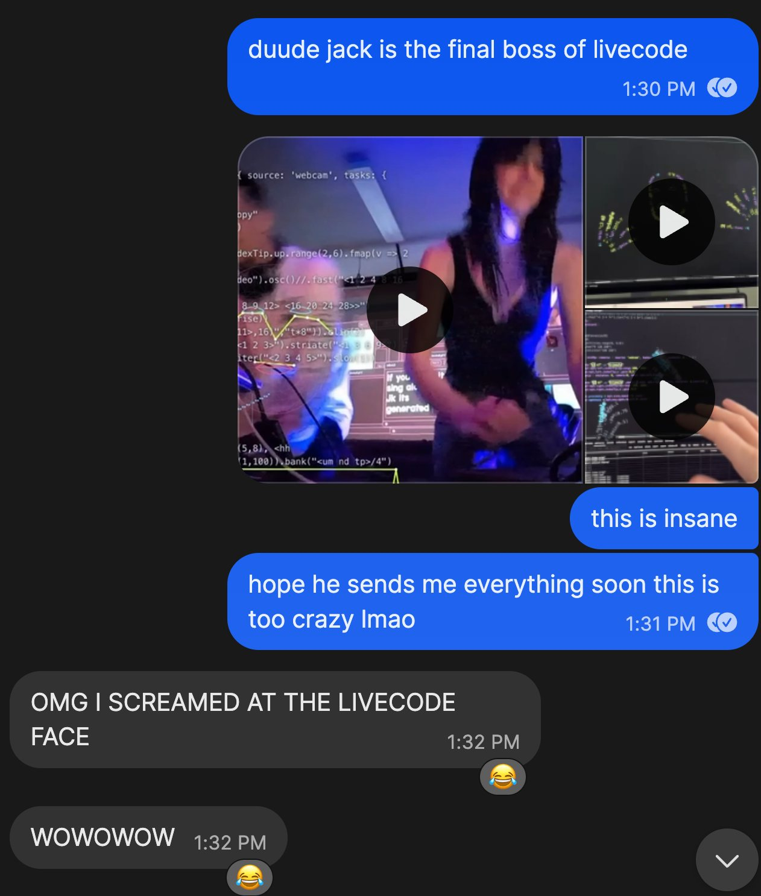
The surprise emergence of a LIVECODE FACE felt like encountering the final boss.
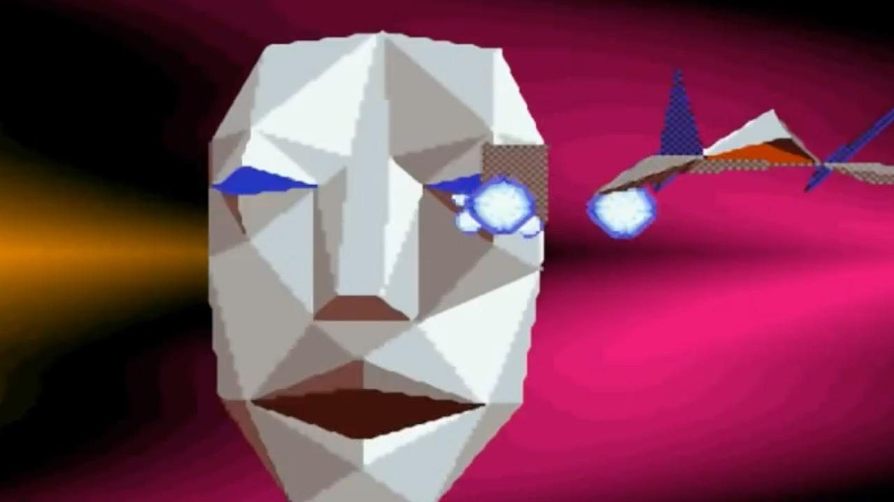
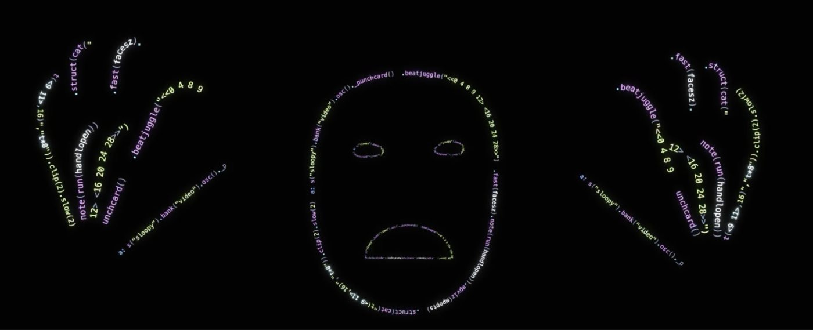
The music needed to carry the suspense and frisson of a difficult live performance, with proper rhythmic and melodic context. Yin to its yang. I composed a "boss" melody using fast arpeggiated chromatic runs. Using a home-away-home-away pattern with the repetition of the breakbeat, it tethers you to the song by a mere shoestring, keeps the tension high, floats you into outer space, but still brings you back. Three sub-sections, each increasing in intensity:
- Char and Zack's video gets randomly glitched up.
- Now they're getting cut up in sequences of gradually higher powers of two.
- Lil Data becomes the Face and his body gestures spectrally warp the audio.
As editor I wanted to REALLY bring this section to life, emphasizing the actions on camera, guiding the viewer's attention toward masterful actions which are so unusual they might miss it entirely. I was puzzled, and solved this by simply zooming in on the parts of code as they were getting edited. As a beginner video editor, I was delighted to discover this fundamental trick.
I tease corners of the Face earlier, but wait until the final moment to show you the full look. And when he first shows up, I make sure it's the only thing on screen, so your brain registers. Finally he sucks in the entire video, and we transition to more video fx.
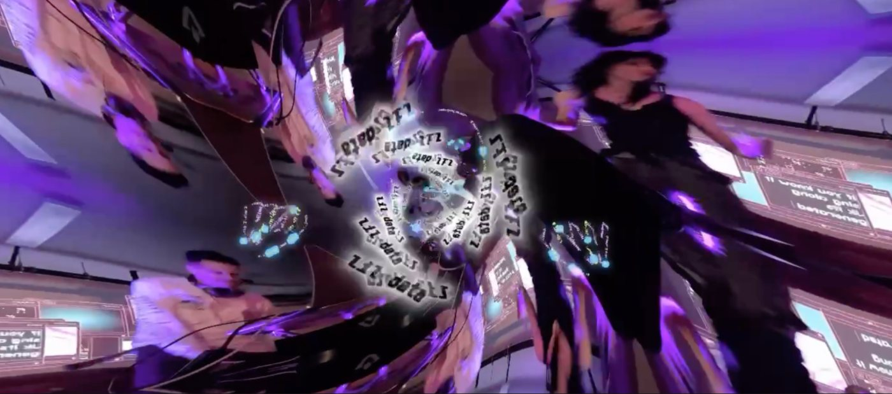
Noodle Doodle
I had listening sessions with Noodle. She's great at feeling when there's something off with small moments, or if something is getting annoying, or when the momentum stumbles. I can sense as I observe her listening, and this helped me focus on what to fix or delete.
After listening to the end, I asked "what does the song need?" and she said "between sloopy and doopid it should say 'hyperintelligence'". LMAO, we both laughed, so we had to do it.
She's a great voice actor. She performed several versions of this word into the mic. We went with the one that sounded most like Steve Jobs giving a keynote about the latest product Hyperintelligence™.
Hyperintelligence
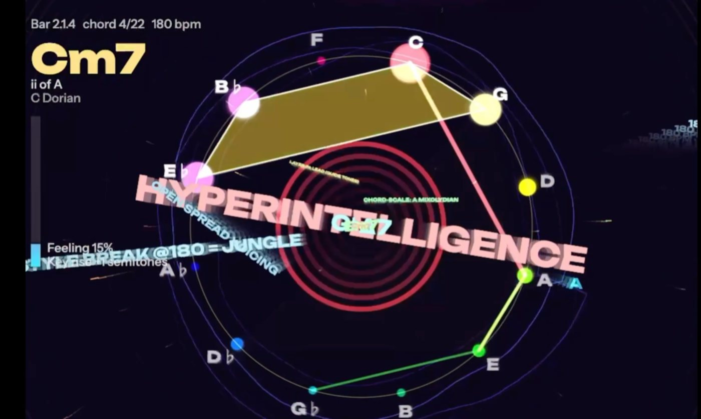
I felt "Hyperintelligence" should be some crazy IDM section of extreme music theory wankery with rapid extended chord changes using advanced jazz harmony, Coltrane theory, neo-Riemannian theory, negative harmony, etc. And that I should have AI write this part, like an "LLM solo" as a counterpoint to Lil Data's livecode solo, to represent the current extreme of machine virtuosity.
Several weeks later Claude Opus upgraded and finally seemed like it had the ability to 1-shot a part like this. The prompt was "With javascript web audio, make an extremely overstimulating short section of increasingly intense music at 180bpm that uses the most obscure harmony theories". The tweet of this section did well, 44k views.
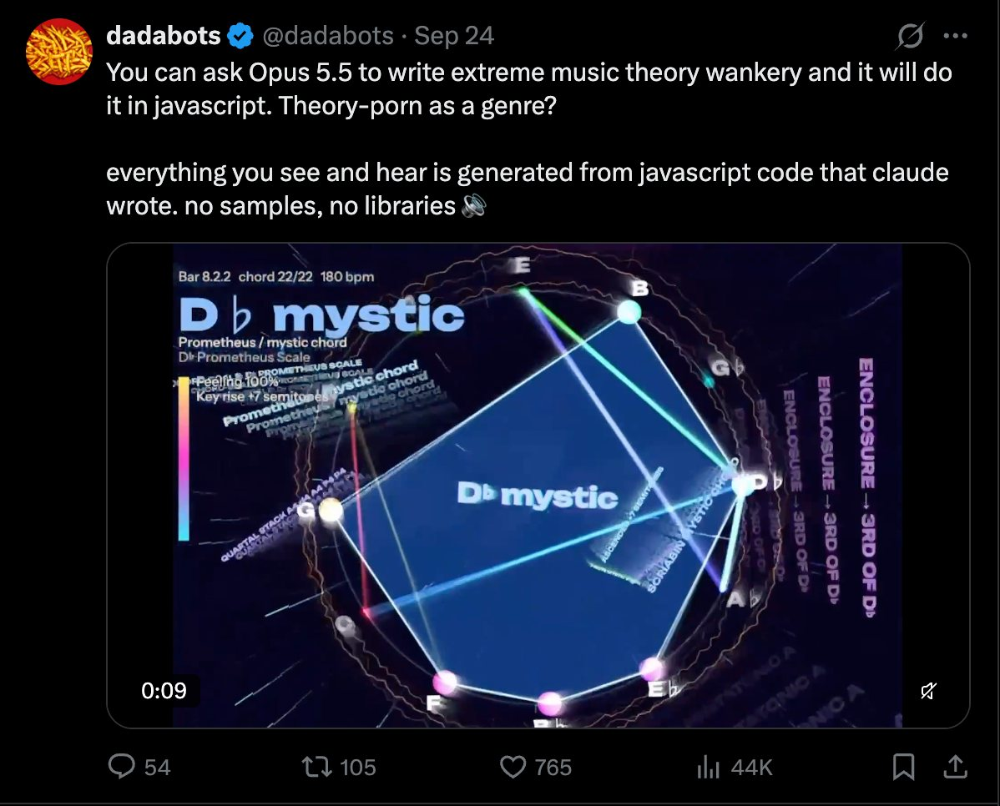
LLMs & Video & 3D
From April to September 2026, as we worked on Sloopy Doopid, the frontier LLMs leaped in capabilities, especially with video and 3D rendering with JavaScript, and the music video captured it like a fossil.
The entire music video was edited in the same Ableton session as the music. No After Effects, no Blender, no Resolve. All 3D effects were vibecoded using Claude Code with Opus 5.5, Codex with Astra 6, and open models, including animating 4D splats into lissajous curves and infinite zooms.
Tbh editing in Ableton was so much nicer because the interface is already beat-synced and I could edit the music at the same time. This put the video and music in dialogue with each other, co-created. Ableton's video editing features are extremely basic (the only actions are cut and paste) but it worked.
For each effect, I vibecoded 3D interactive webapps based on three.js (for example, the twerking simulator), which I could direct and screen capture. And to create surprising clips, I prompted "film 10 minutes of random settings and camera angles", which I curated and cut from.
3D World
Using pose tracking, on max effort, Claude was able to one-shot a three.js version of the entire music video. Zack and Char look so funny as 3D shapes. Zack requested his shirt have an egg.
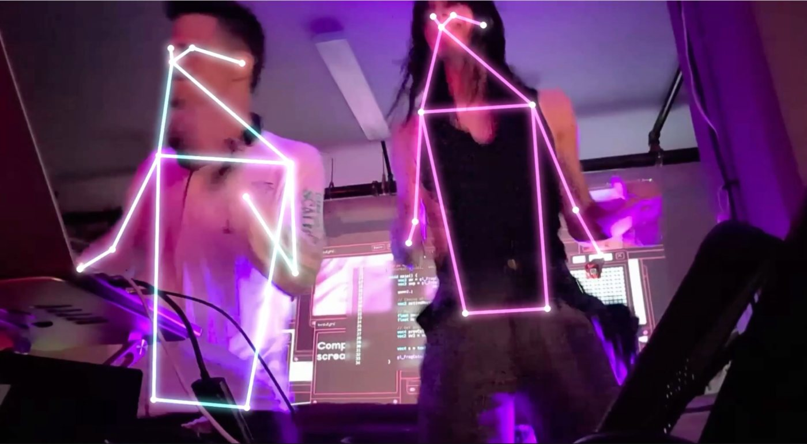
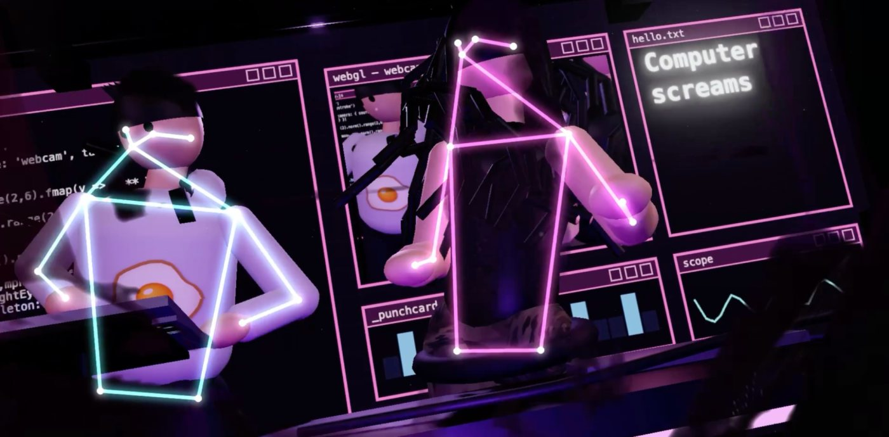
"The Lissajous"
This section is a good example of how we created the music and video together in dialogue.
Both Lil Data and Noodle Doodle said the track needed more breaks and breathing room, especially before the hook. Not only did it need a sound break, it needed a storytelling break. This led me to imagine an old 1940s cartoon theme card introducing the concept of the Lissajous. Stable Audio, which is trained on film/TV music, was great for generating this brief theme. Minimax H3 generated several videos; however, it could not get the lissajous correct. Opus fixed all of them, animating them all with the same exact phase. This let me quickly cut between all of them, which kept the animation consistent, while changing the background.
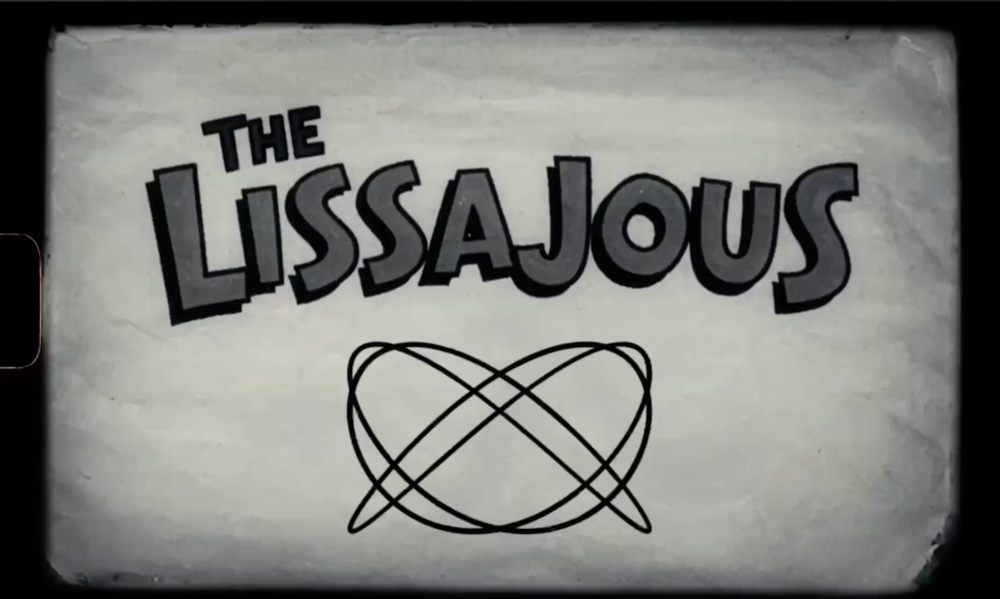
4D Lissajous Splats
Splats are another technique to 3D-ify a video. Char and I talked about how our friend Kevin Kwok made a WebGL Splat viewer and we had the idea to use it. We wanted to see if we could turn the Zack-Char video into a 4D animated splat.
We tried training two open source machine learning models to achieve this:
- Gaussians-to-Life
- G2L hallucinates the missing parts of the scene based on a prompt.
- Shape of Motion
- SoM doesn't hallucinate, it just leaves the rest of the scene missing.
I liked Shape of Motion because it just makes a glitchy twisted version of the original content.
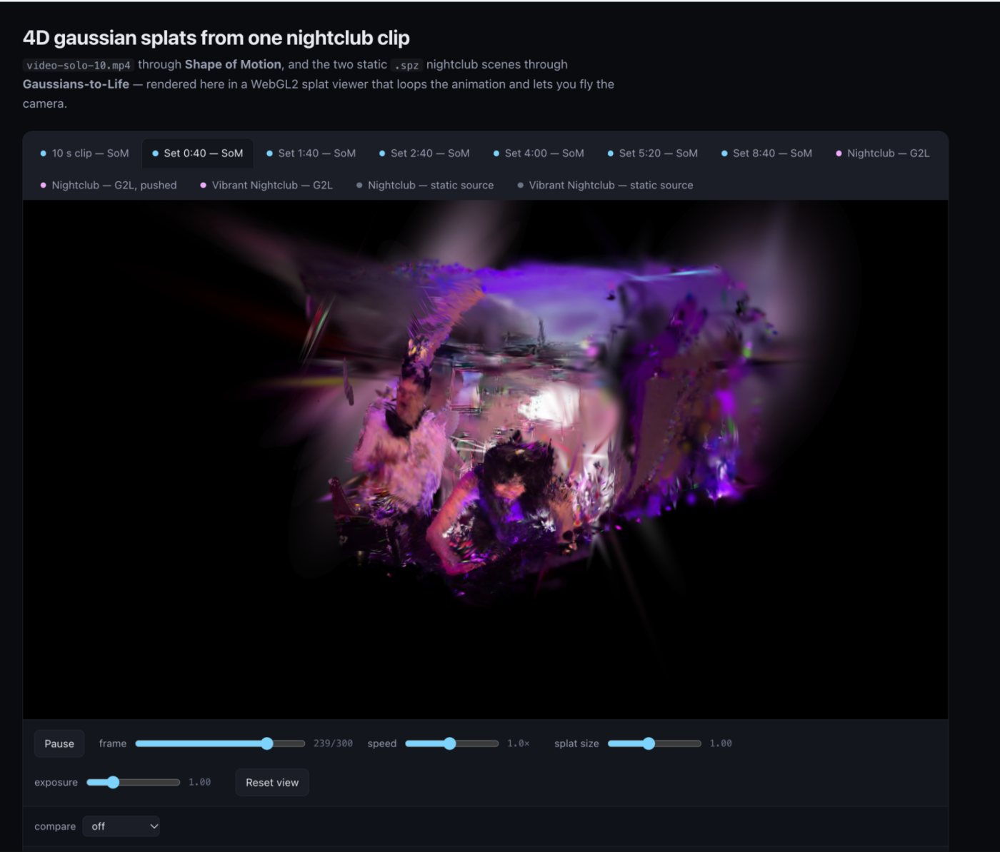
We made a dozen different splat animation effects. Here we animate the typing of the livecode function that executes the splat effect.
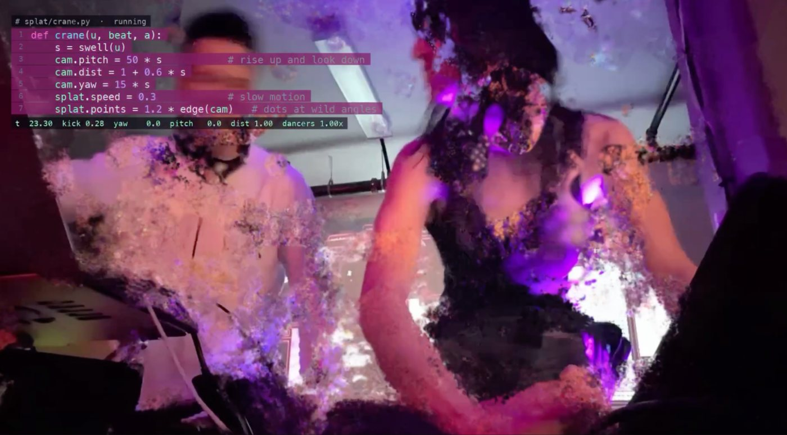
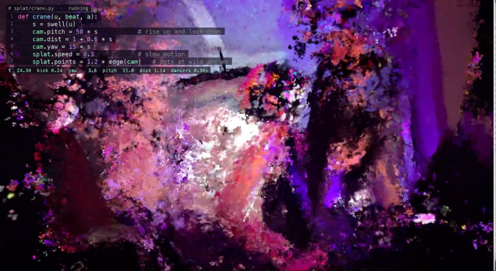
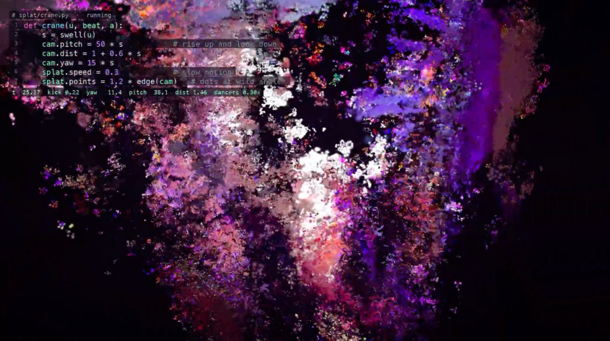
Lissajous Splats
To increase the drama of these effects, halfway through the video we turn the splats into lissajous animations!
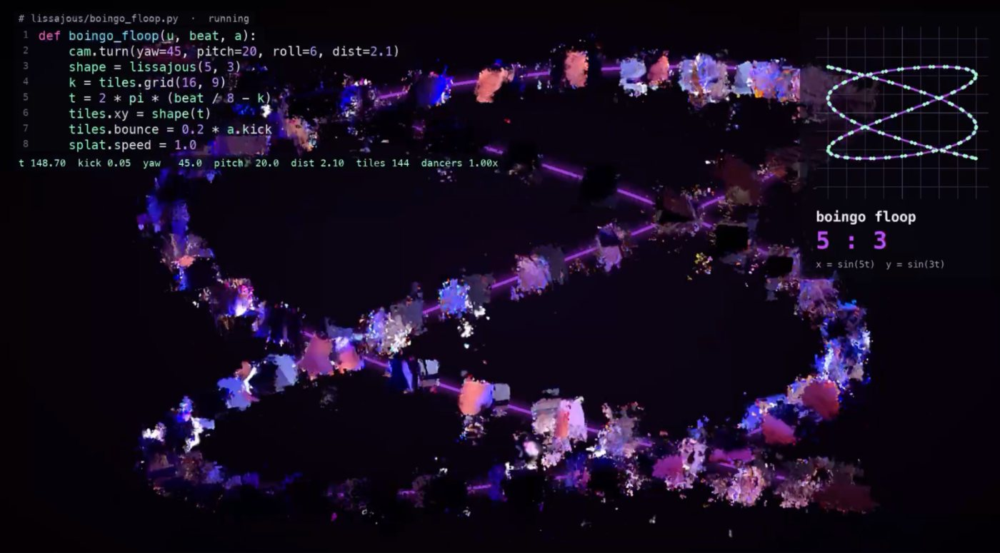
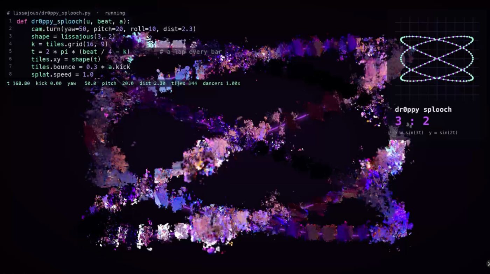
Infinite Splat Zoom
But my favorite effect we came up with are these Infinite Splat Zooms.
Inside the splat scene of Char and Zack, Char's visuals include a self-referential pop window, and so we can recursively zoom out of the scene through the window. The first zoom does a slower zig-zag to portray that it is actually a 3D scene. However if the zig-zag goes too fast it's nauseating. The second zoom pulls out rapidly from the center without zig-zag. The two act as a natural climactic progression speedup, and punctuate Lil Data's solo perfectly, returning to our hook.
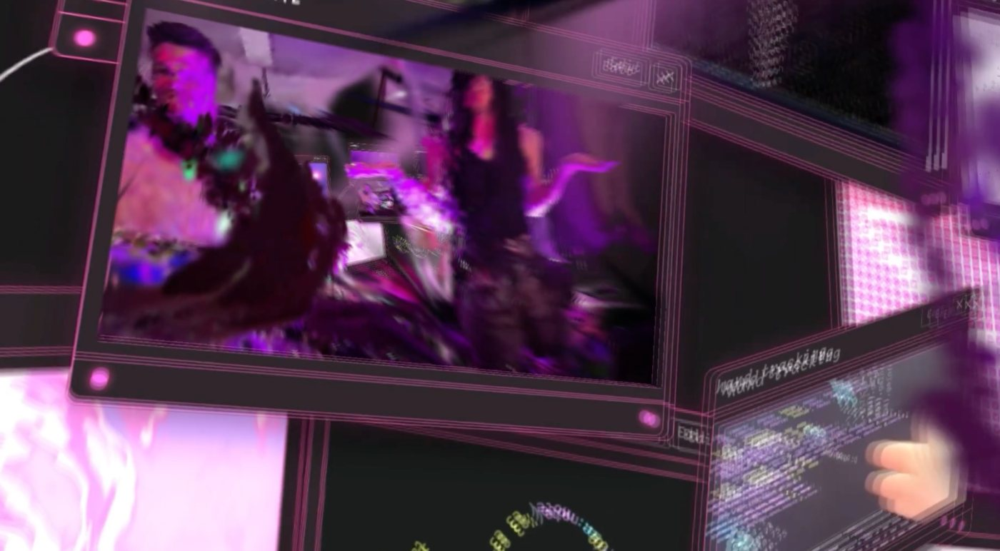
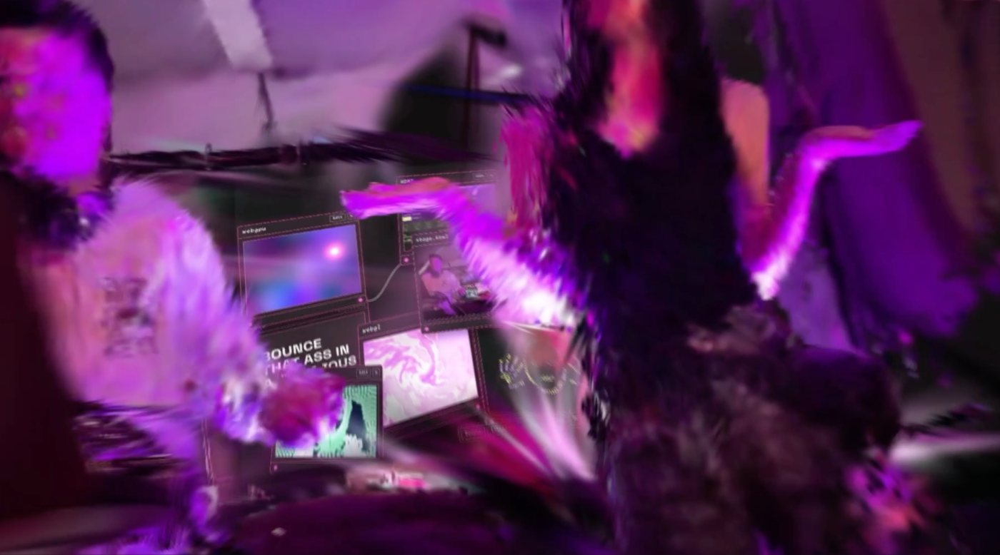
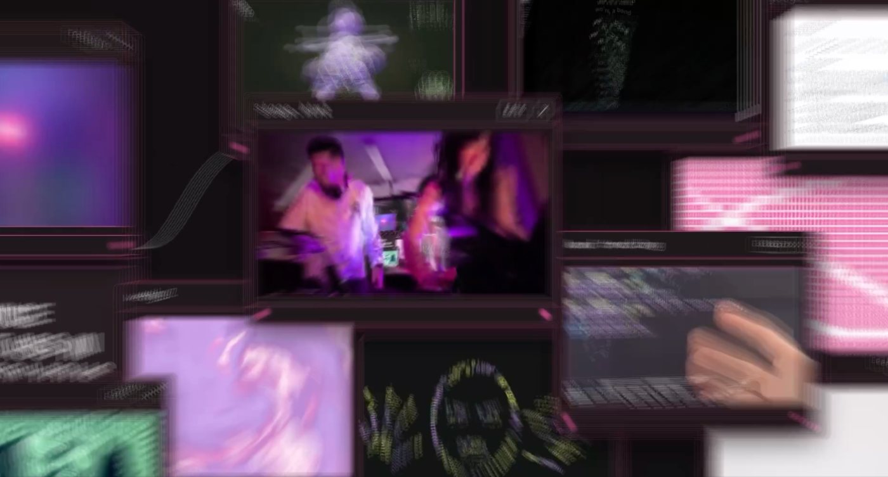
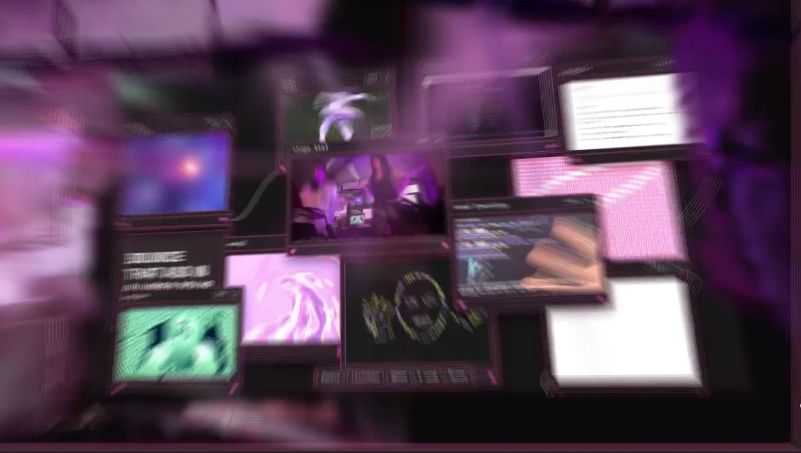